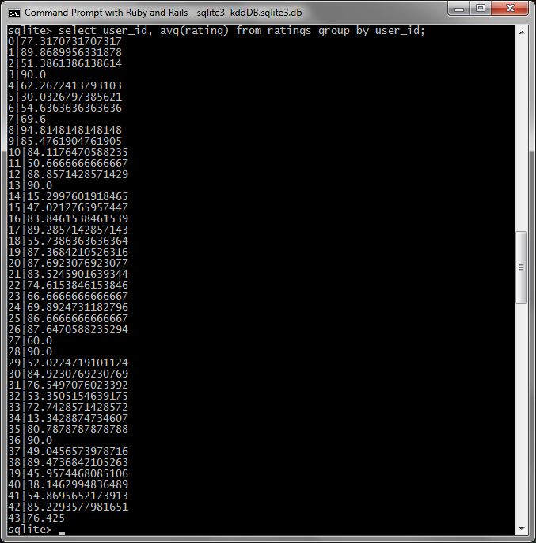

Data Mining Portfolio
Application: 2011 KDD Cup Challenge, Track 1
The KDD Cup is a data mining challenge hosted by Yahoo! Labs. In this project we were given the task of creating a working solution for Track 1 of the KDD Cup 2011 Challenge. The dataset for this challenge consists of Yahoo! Music data. It is made up of tracks, albums, artists, and genres which all tie together. The different items (albums, users, tracks, etc.) are given meaningless anonymous numbers so that no identifying information is released. Each user in the dataset has rated items such as tracks, albums, etc. The goal of this project is to build a predictive model. This model should have the ability to predict the rating a user will give to an item.
Preprocessing
The first step in any Data Mining project is to take the time to explore and familiarize yourself with the data. This particular dataset is made up of tracks, albums, artists and genres. Each track has a unique id, associated album id, associated artist id, and any number of optional genres. Each album has a unique id, an associated artist id, and also any number of optional genres. The genre and artist files each hold a list of unique ids but no other identifying information. Looking at this non-standardized text format the first step was to put it into a database. The database I created includes four main tables: albums, artists, genres, tracks, and two join tables: albums_genres and genres_tracks. First, I created a SQLITE database that met these specifications with the corresponding attributes for each table. Then I took the time to write a program, in Ruby using Active Record, that handles reading in the data files and loading them into the correct places in the database. The loading process ended up taking a lot longer than I was expecting. It took around 2 hours to load all of the data in to my SQLITE database and the dataset I was using was the sample dataset provided which is much smaller than the full dataset. At this point I realized I forgot to load the users and their ratings into the database so I went back and added a users and ratings table and added the loading into my previous Ruby program. The loading of the ratings file didn’t take nearly as long since there are only 11696 lines in the files. Below is the Ruby program used to load the data into the database.
dbLoad.rb
Summary Statistics
After all the data was loaded into the database my first thought was to try to generate some summary statistics for the data. I decided to try to use Knime to do this. I spent hours trying to get my SQLITE database to work with Knime with no luck. I went online and downloaded a sqlitejdbc driver to try to make it work and spent a great deal of time searching online for a solution to my problem but I continued to get errors when using Knime. I finally gave up on that idea and decided to use my own SQL queries to generate some statistics. The first thing I wanted to do was to see what exactly the item id rated in the ratings file was referring to. Is it just tracks, albums, and artists? Or does it also include ratings for genres? First I checked the number of ratings there were for albums which turned out to be only 1391. Then I checked the number of ratings for the tracks table tracks which was 7295.The tracks ended up being the most rated item which seems natural. Artists had 2487 and surprisingly there were 479 ratings for genres. I did not expect there to be any ratings for genres because it doesn’t seem like a common thing to rate to me. I decided to see what the average overall rating was and it turned out to be approximately 50.024 which wasn’t a very useful statistic to generate. Figure 1 shows the average rating for each user which is the next statistic I decided to calculate. The average ratings for each user tend to be pretty high, only a hand full of them fall below 50% for their overall average rating. After some thought, I tried to find the number of unique items rated. This seemed like a useful statistic since it would show how the data is distributed in terms of how many times an item was rated. It turns out there are 9308 unique items rated out of 11652 total items (in the sample dataset). This means that each rated item has not always been rated more than once. This makes the model more difficult to build because there may not always be enough ratings to compare to.

Figure 1 - The average ratings for each user in the sample dataset.
Clustering
After spending time on creating the database and generating some simple statistics I decided to think about different algorithms that could be used on this data and compare the options. The first approach that came to mind was clustering. In this dataset I think it would be possible to cluster similar users, tracks, or albums. The only problem with this approach is that it would be hard to judge what items in the dataset are similar. Determining if users are similar would be difficult. It should depend on the ratings each user gave a song. But the algorithm it would have to make sure each of the users actually rated the song in question. This approach could also take into account the genres a user likes and compare using that. A lot of different factors can go into finding the similarities between users. Another possibility is to cluster tracks. One possible way to cluster tracks is to base clusters on the genres of the tracks. This would involve altering the dataset a little with some preprocessing. The genre attributes for a track could be made binary by creating an attribute for each genre that is either true or false. This would allow binary similarity metrics to be used on the data so that it can be compared according to genres. This type of idea can also be applied to other items in the dataset such as albums, artists, or even users.
Classification
Based on the nature of the dataset, classification is also an approach that can be considered. In this dataset users can be classified. Depending on a user’s ratings of different items in the dataset they can be classified as a mixture of genres. For example, a user could have high ratings for rock music and high ratings for polka as well. This user can be classified according to his/her ratings and if a new user is added that has also rated rock and polka music high then that user is comparable to the previous user and similar ratings can be used to predict the new users ratings of songs. My next thought was to try a KNN classifier on the dataset. I thought it would be possible to find the K nearest neighbors of a user and base the rating of a song on those k nearest neighbors. This would be an issue if the song has not been rated by any users yet.
Association Analysis
At this point in the project I’ve covered two main ideas of data mining so I thought about association analysis next. The problem with using association analysis on this dataset is that there are no set trends in the data. Users can be very different and rate songs based on many different aspects. Some users may always rate songs high while others may always rate them low except for a select few. Due to this variation it is hard to determine a set of rules that can define the data. It may be possible to create a separate set of association rules for each user but this approach would require a great deal of computation and may not provide the best results.
Anomaly Detection
Another issue to consider when creating a model is anomaly detection. After some thought, I have determined that it is difficult, if not impossible to determine if there are anomalies in this particular dataset. This is because the data is full of user ratings which may vary greatly. A user may rate all the songs of a certain genre highly except one. This one song that was rated low may not be an anomaly. The user may just not like that certain song even if it is from a genre they always rate highly. This low rating could also be an anomaly such as an error in the rating but it is not possible to tell in a dataset such as this one. Therefore it is difficult to tell if there is an anomaly in this dataset.
Conclusion
The dataset for this project is unique and has many different aspects that must be considered when building a model. Many different approaches can be used to build a predictive model that may or may not give good results. As discussed above, anomaly detection is very difficult in this dataset and may not be the best method to apply to the data. Association analysis is also an option even though it may take up a lot of computation time. I think the best approach of the ones discussed would be to use the classifier described above that classifies users based on their previous ratings and predicts new songs based on the classification of the user. I believe this approach will provide a reference for a prediction for a user based on the genres a user has already rated directly or through other data items. There are many possible approaches to building a predictive model for this challenge and the classification technique is just one of them.